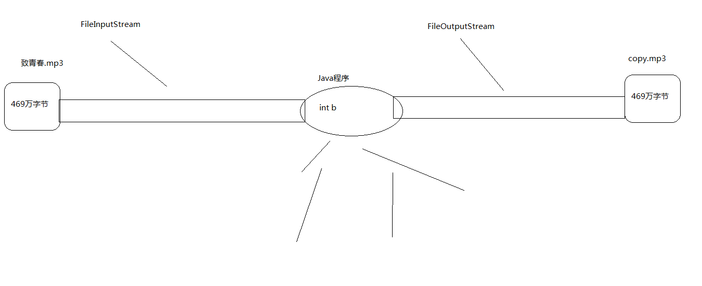
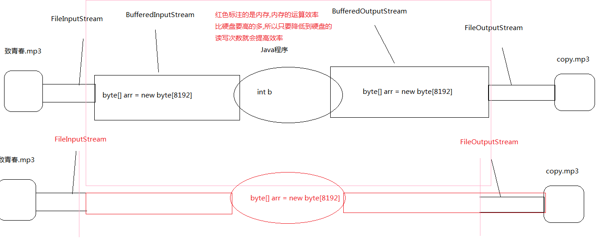

0x01 IO流-字节流(IO流概述及其分类)
概念
IO流用来处理设备之间的数据传输
Java对数据的操作是通过流的方式
Java用于操作流的类都在IO包中
流按流向分为两种：输入流，输出流。
流按操作类型分为两种：
* 字节流 : 字节流可以操作任何数据,因为在计算机中任何数据都是以字节的形式存储的
* 字符流 : 字符流只能操作纯字符数据，比较方便。
IO流常用父类
1.字节流的抽象父类：
* InputStream
* OutputStream
中文拷贝有问题，由于编码表
2.字符流的抽象父类：
* Reader
* Writer
图片拷贝有问题，由于编码表
IO程序书写
使用前，导入IO包中的类
使用时，进行IO异常处理
使用后，释放资源
0x02 IO流-字节流(FileInputStream)
read方法
read()一次读取一个字节(8位)
1 | //IO操作字节流的read方法 |
read()方法读取的是一个字节(8位),为什么返回是int,而不是byte:
因为字节输入流可以操作任意类型的文件,比如图片音频等,这些文件底层都是以二进制形式的存储的,如果每次读取都返回byte,有可能在读到中间的时候遇到111111111。那么这11111111是byte类型的-1,我们的程序是遇到-1就会停止不读了,后面的数据就读不到了,所以在读取的时候用int类型接收。如果11111111会在其前面补上24个0凑足4个字节,那么byte类型的-1就变成int类型的255了这样可以保证整个数据读完,而结束标记的-1就是int类型
1 | import java.io.FileInputStream; |
write方法
write()一次写出一个字节(8位)
1 | FileOutputStream fos = new FileOutputStream("bbb.txt"); //如果没有bbb.txt,会创建出一个, 如果有，则先清空文件内容，再写入 |
演示
拷贝图片
1 | FileInputStream fis = new FileInputStream("致青春.mp3"); //创建输入流对象,关联致青春.mp3 |
** 弊端：字节流一次读写一个字节复制音频，效率太低 **
原理图

字节数组拷贝之available()方法)
案例演示
* int read(byte[] b):一次读取一个字节数组
* write(byte[] b):一次写出一个字节数组
* available()获取读的文件所有的字节个数
** 弊端:有可能会内存溢出 **
1 | FileInputStream fis = new FileInputStream("致青春.mp3"); |
字节流一次读写一个字节数组复制图片和视频
1 | FileInputStream fis = new FileInputStream("致青春.mp3"); |
0x03 IO流-字节流(BufferedInputStream和BufferOutputStream拷贝)
缓冲思想
* 字节流一次读写一个数组的速度明显比一次读写一个字节的速度快很多，
* 这是加入了数组这样的缓冲区效果，java本身在设计的时候，
* 也考虑到了这样的设计思想(装饰设计模式后面讲解)，所以提供了字节缓冲区流
BufferedInputStream
* BufferedInputStream内置了一个缓冲区(数组)
* 从BufferedInputStream中读取一个字节时
* BufferedInputStream会一次性从文件中读取8192个, 存在缓冲区中, 返回给程序一个
* 程序再次读取时, 就不用找文件了, 直接从缓冲区中获取
* 直到缓冲区中所有的都被使用过, 才重新从文件中读取8192个
BufferedOutputStream
* BufferedOutputStream也内置了一个缓冲区(数组)
* 程序向流中写出字节时, 不会直接写到文件, 先写到缓冲区中
* 直到缓冲区写满, BufferedOutputStream才会把缓冲区中的数据一次性写到文件里
拷贝的代码
1 | FileInputStream fis = new FileInputStream("致青春.mp3"); //创建文件输入流对象,关联致青春.mp3 |
原理图

小数组的读写和带Buffered的读取哪个更快?
* 定义小数组如果是8192个字节大小和Buffered比较的话
* 定义小数组会略胜一筹,因为读和写操作的是同一个数组
* 而Buffered操作的是两个数组
flush()方法
* 用来刷新缓冲区的,刷新后可以再次写出
close()方法
* 用来关闭流释放资源的的,如果是带缓冲区的流对象的close()方法,不但会关闭流,还会再关闭流之前刷新缓冲区,关闭后不能再写出
0x04 IO流-字节流(字节流读写中文)
字节流读取中文的问题(在字符流中可以解决)
* 字节流在读中文的时候有可能会读到半个中文,造成乱码
字节流写出中文的问题
* 字节流直接操作的字节,所以写出中文必须将字符串转换成字节数组
* 写出回车换行 write(“\r\n”.getBytes());
0x05 IO流-字节流(流的标准处理异常代码1.6版本及其以前)
try finally嵌套
1 | FileInputStream fis = null; |
0x06 IO流-字节流(流的标准处理异常代码1.7版本)
try close
1 | try( |
原理
* 在try()中创建的流对象必须实现了AutoCloseable这个接口,如果实现了,在try后面的{}(读写代码)执行后就会自动调用,流对象的close方法将流关掉
0x07 IO流-字节流(图片加密)
给图片加密
1 | BufferedInputStream bis = new BufferedInputStream(new FileInputStream("a.jpg")); |
0x08 IO流-字节流(拷贝文件)
在控制台录入文件的路径,将文件拷贝到当前项目下
1 | Scanner sc = new Scanner(System.in); |
0x09 IO流-字节流(录入数据拷贝到文件)
将键盘录入的数据拷贝到当前项目下的text.txt文件中,键盘录入数据当遇到quit时就退出
1 | Scanner sc = new Scanner(System.in); |